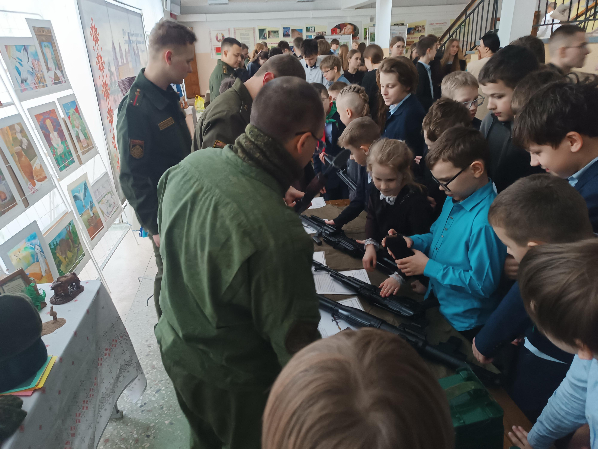
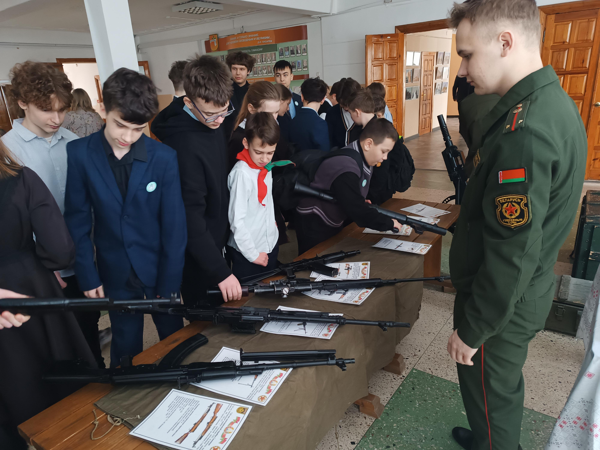
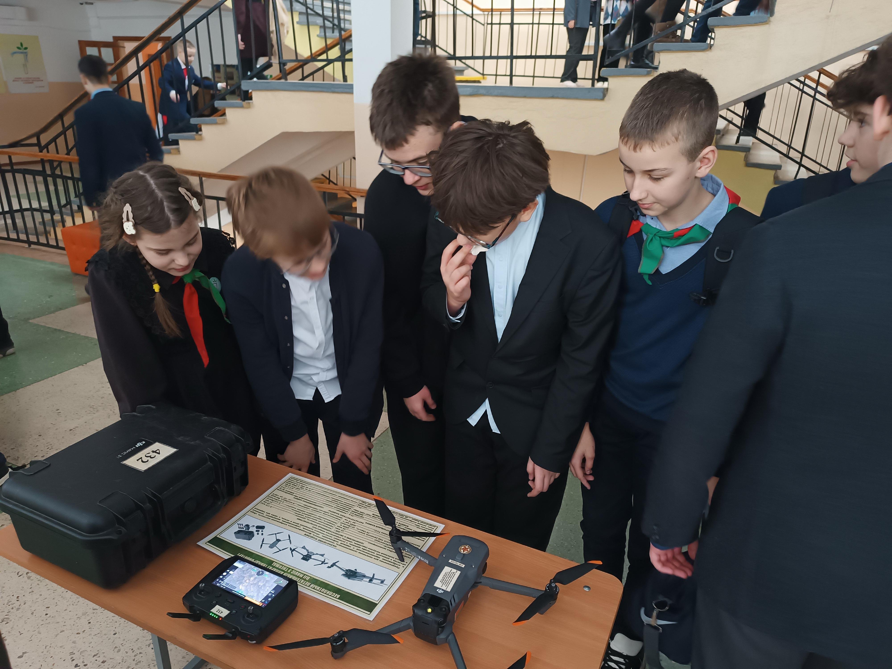
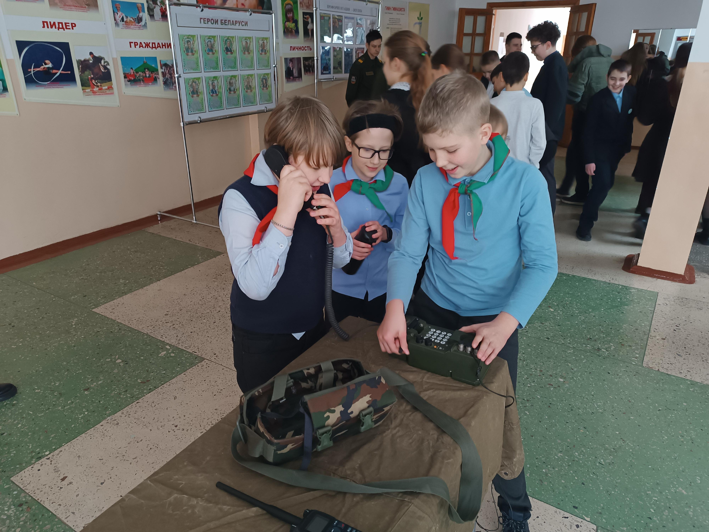
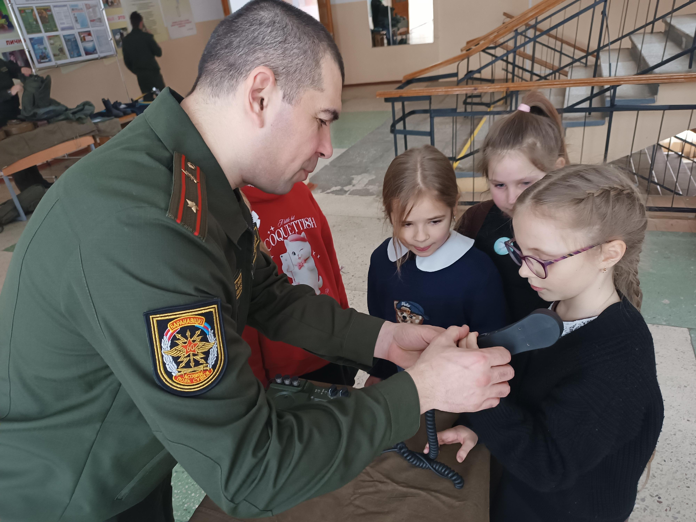
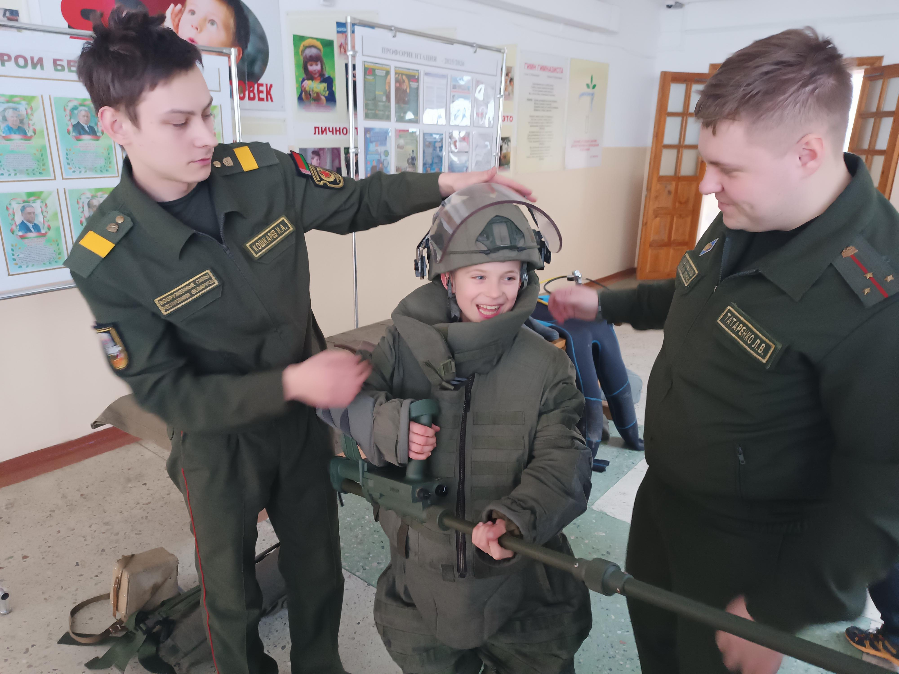
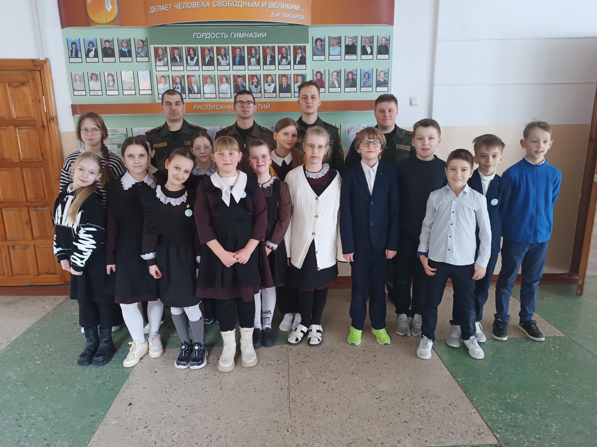

ЗАЩИТА РОДИНЫ – НАША ГОРДОСТЬ И ОТВЕТСТВЕННОСТЬ!
Традиционно, накануне Дня защитников Отечества и Вооруженных Сил Республики Беларусь, Государственное учреждение образование «Гимназия №1 г. Борисова» посетили военнослужащие Северо-западного оперативного командования.
18 февраля военнослужащие пяти воинских частей: 740 зенитного ракетного полка, 7 инженерного полка, 60 отдельного полка связи, 814 центра технического обеспечения, 121 навигационно-топографической части, провели для ребят гимназии интерактивную выставку вооружения и снаряжения, присущих военным профессиям.


Даже самый привередливый гимназист не остался равнодушным к увиденному. Боевые дроны, стоящие на вооружении белорусской армии, многочисленные образцы стрелкового оружия, водолазное снаряжение, радиостанции, снаряжение сапера, – и это далеко не весь перечень представленного на выставке. Вместе с тем, самое главное, что все это можно было подержать в руках, примерить, разобрать и собрать под чутким присмотром военнослужащих. К слову отметить выставка привлекла внимание не только мальчишек, но и девчонок.


Но самое главное, это, конечно же, живое общение с людьми в погонах, которые охотно отвечали на все вопросы гимназистов и многое успели рассказать о службе в Вооруженных Силах Республики Беларусь.


